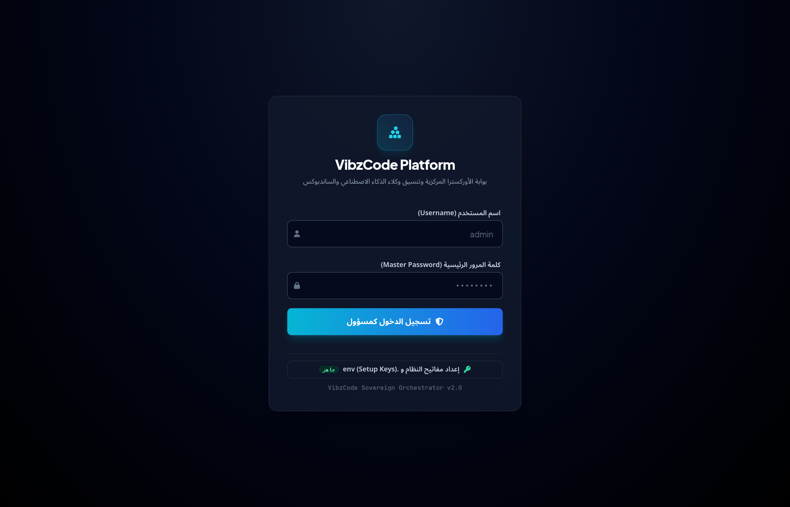

Per-session sandbox isolation
Every session gets its own isolated directory and access token. No agent can escape its workspace without explicit admin permission.
Workspace security
100% isolated
VibzCode is a multi-engine AI agent orchestrator and workspace platform. Configure, isolate, dispatch, and supervise autonomous agent sessions across five AI engines — from one command, on your own machine.
npx vibzcode
Assign different projects and tasks to the specialized engine that fits best — each with its own permission boundaries.
agy
Agentic coding with sandbox enforcement and directory scoping.
claude
Deep architectural refactoring, bash automation, terminal-native.
codex
Autonomous verification, unit testing, and script generation.
vibe
Generative workspace manipulation and fast, lightweight coding.
opencode
Open-source multi-model engine with automated approvals.
Ten capabilities, one platform — built for teams that run autonomous agents in production.
Every session gets its own isolated directory and access token. No agent can escape its workspace without explicit admin permission.
Expose agents, files, and jobs to Claude Desktop, Cursor, ChatGPT, and Open WebUI over standard MCP Streamable HTTP and SSE — a session plane and an orchestrator master plane.
Stream the active tool, elapsed time, and partial output of any long-running job — and abort a runaway task with a single call. New in v2.2.
Self-authorizing, tamper-proof download links. External agents pull videos, builds, and datasets with plain curl — no more 401 errors. New in v2.2.
External agents tag their dispatches with a sender name, and dispatched jobs appear instantly in the session web chat — no waiting for completion. New in v2.2.
Fork any session at any point to try a new idea without touching the original — with a hierarchical tree view showing every branch of every project.
A real Bash session in the browser, confined to the session sandbox, with full bidirectional text support — including Arabic.
Images, videos, audio, PDFs, and code the agent creates become interactive previews in chat — long-press to download instantly.
On first launch, VibzCode probes for your AI keys and guides you through a secure setup. Keys are written with strict 0o600 file permissions.
Import VibzCode into any Node.js project: askAgent, multi-engine routing, and MemoryZ context injection — programmatic agent execution in a few lines.
VibzCode connects with any memory system — and is natively compatible with MemoryZ, the sovereign live-memory substrate built for agents that must never forget.
No more context amnesia. Rules, decisions, credentials, and project history survive across sessions, machines, and engines.
Learn more about MemoryZMemoryZ v3 is the shared memory layer for every VibzCode session — one memory, every engine.
Retrieve rules, decisions, and documentation by meaning — 768-dim vector recall, plus exact hash lookup.
Hierarchical task trees with atomic claiming coordinate multi-agent swarms — no duplicate work.
State is segregated per project — default, vibzcode, enterprise — so nothing leaks between workspaces.
Credentials live in an encrypted vault — never in plain text, never in a memory. Memory-as-attachment injects stored context into session prompts transparently.
From a single command to a supervised, memory-backed agent swarm.
Launch with npx vibzcode and manage every session from the web admin.
Send tasks to any engine over MCP, the SDK, an endpoint, or the dashboard.
Agents code in isolated sandboxes while you watch live progress streaming.
Everything lands in shared memory — MemoryZ or your own system — ready for the next session.
Real screenshots from VibzCode — the central dashboard, the fork tree, the agent console, and the workspace explorer.

Sessions dashboard — sort, pin, favorite, and control every session from one place.
Run it instantly with no install, add it globally to your machine, or self-host it from source.
No permanent install. Probes your environment, starts the server, and opens the dashboard automatically.
npx vibzcode
npx vibzcode --port 3334
Works on Linux, macOS, and Windows
Install once as a system command, then run it anywhere with a single word.
npm install -g vibzcode
pnpm add -g vibzcode
vibzcode
Lightweight, official npm package
For production servers and advanced development, with persistent process management.
git clone https://github.com/Zizwar/vibzcode.git
npm install && npm start
pm2 start ecosystem.config.cjs
Full control over code and services
--port <num>
Set the server port (default: 3333, or $PORT).
--status
Check AI key readiness and configuration without starting the server.
--no-open
Disable auto-opening the browser (useful on remote servers).
--host <ip>
Set the network bind host (default: 0.0.0.0).
The dashboard opens automatically at
http://localhost:3333